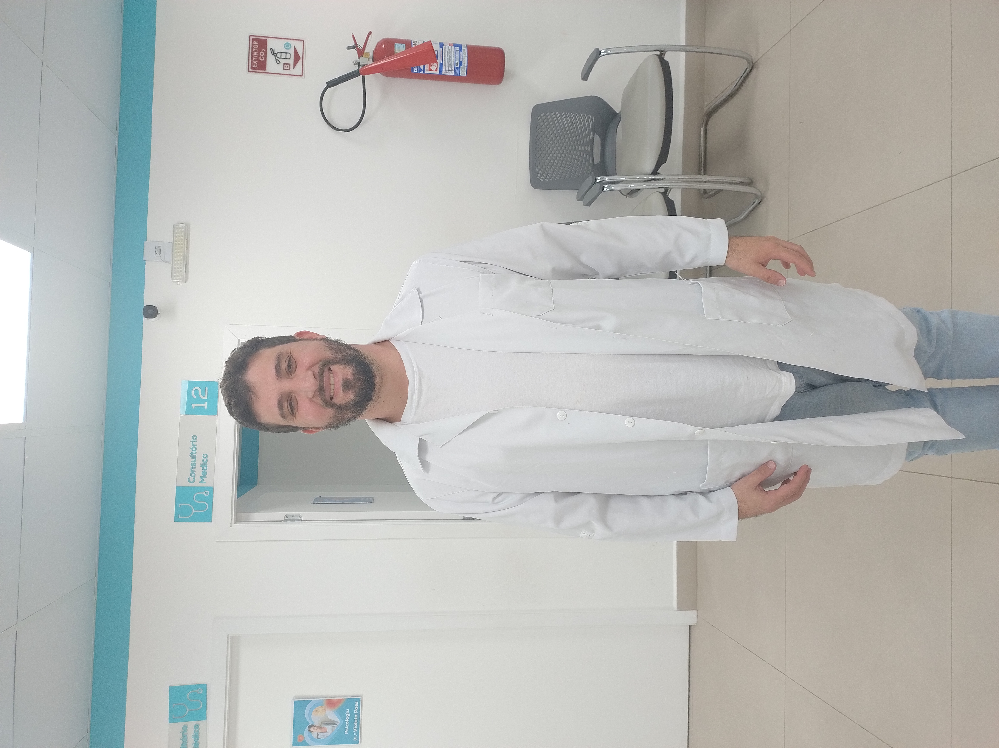

Por que fazer?
Precisar de ajuda profissional qualificada é uma demonstração de
maturidade e amor-próprio.
Em resumo, o processo terapêutico te ajudará a recuperar seu estado natural de felicidade e completude. A Psicoterapia é um processo focado em ajudar um indivíduo, casais ou grupo de pessoas a resolver questões emocionais, tomar as rédeas de suas vidas e planejar e viver um futuro mais feliz.
Através das sessões psicoterápicas, é possível aprender maneiras mais construtivas de lidar com o estresse a que estamos submetidos diariamente e com as particularidades da vida pessoal, profissional ou familiar. Também pode ser um processo de apoio ao passar por um período difícil como o luto, transições de carreira ou um divórcio.
Primeiro precisamos abandonar o pensamento coletivo de que a terapia é para quem esta "doente" ou tem problemas. Na verdade terapia é para quem quer resolver os problemas, por que problemas todos nós temos. O psicologo pode ajudar todas as pessoas, em qualquer momento de sua vida, seja para superar um divórcio, o luto ou para ajudar a conquistar uma promoção no emprego.
Pode parecer pesado, mas minha abordagem é leve e fazemos um processo acima de tudo, prazeroso na maioria do tempo. O processo terapêutico te tornará apto(a) a desenvolver a inteligência emocional. O objetivo não é eliminar as emoções consideradas negativas, como o medo, ansiedade ou a insegurança. Em outras palavras, a terapia lhe dará a capacidade de gerir seus sentimentos para tirar o melhor proveito de todas as situações, lhe oferecendo ferramentas para lidar com suas emoções.
A terapia não é receita de bolo, cada processo é unico e subjetivo, portanto a importância de procurar um profissional no qual nos identificamos, não deixe de cuidar da sua saúde mental.